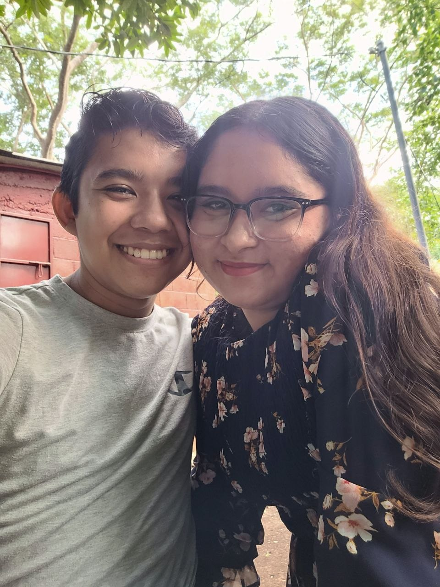
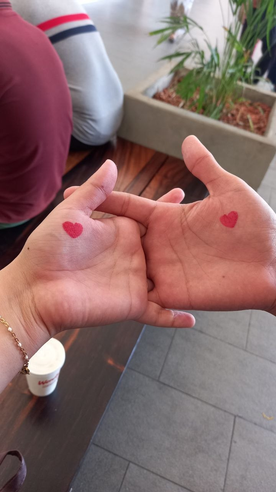
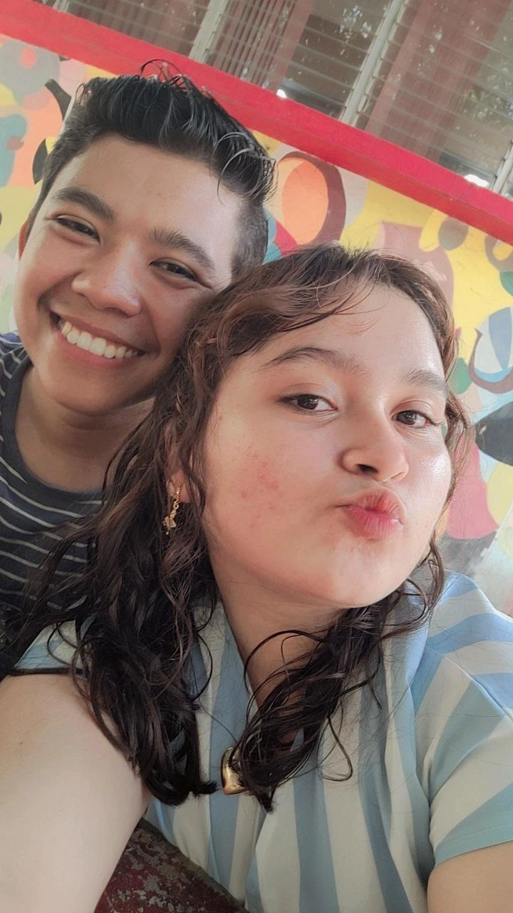
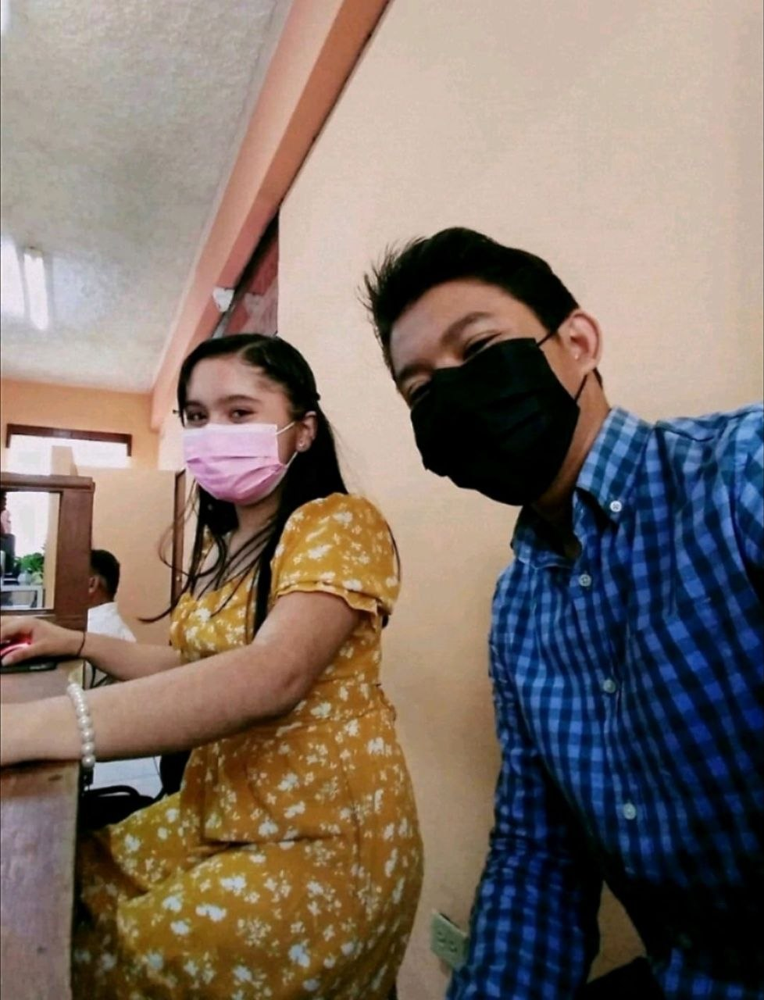
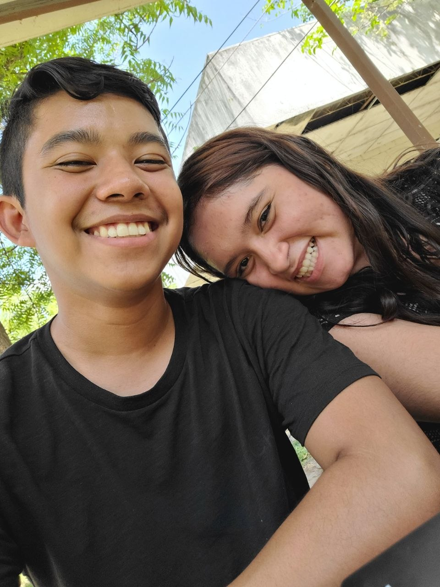

Esta es una sorpresita que estuve trabajando para hoy mi Amor jaja podés bajar para ver lo demás.
Ese primer día de abril en 2019 que te vi, supe que te quería para mí y ahí empezó este amor que te tengo.
Aún recuerdo esos días de 2019 y mitades de 2020 en los que me hacías sentir tan feliz con tus ocurrencias y tu forma de ser.
Okey pues, admito que vos me lo pediste primero pero no me arrepiento en ningún momento de habértelo pedido mi Preciosa Princesa.
Cada día a tu lado me confirma que no me equivoqué al elegirte, porque más que mi novia, sos esa personita que me ayuda en todo lo que voy a hacer y hago.
Con una tacita del cafecito de tus ojos cada mañana soy feliz.
Podés alegrarme el día más amargo con una simple sonrisita.
Tan única, tan tierna, nadie en todo el Universo conocido se te compara.




